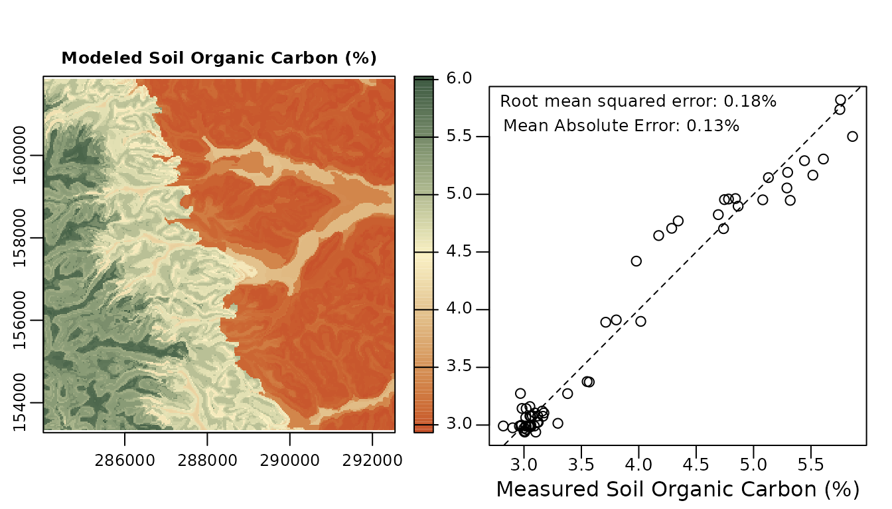

vignettes/modeling.Rmd
modeling.RmdGet the data required for this vignette
# Compressed folder with files from rassta’s installation folder
wasoil <- system.file("exdat/wasoil.zip", package = "rassta")
# Directory for temporary files
o <- tempdir()
# Copy compressed folder to directory for temporary files
file.copy(from = wasoil, to = o)
#> [1] TRUE
# Extract files to subfolder
d <- paste(o, "/rassta", sep = "")
unzip(paste(o, "/wasoil.zip", sep = ""), exdir = d)The approach of rassta for predictive modeling of response phenomena is based on the landscape similarity to stratification units. If each stratification unit across geographic space represents a distinct landscape configuration, and if each configuration influences a phenomenon in a distinctive way, then the spatial variability of that phenomenon can be assessed across space by relating each geographic location to each distinct landscape configuration. Therefore, the more similar a geographic location is to the landscape configuration represented by a given stratification unit, then also the more similar the response of a phenomenon will be at that location to the typical response for conditions within the given stratification unit. Both continuous and categorical response variables are supported. For categorical responses, each category must be identified by an integer value.
There are three main inputs that rassta requires to perform predictive modeling of response phenomena:
The code below demonstrates the preparation of inputs required for the prediction of soil organic carbon (SOC; continuous response) across a landscape.
# Load rassta and terra packages
library(rassta)
library(terra)
# Single-layer SpatRaster of stratification units
su <- rast(paste(d, "/su.tif", sep = ""))
# SpatVector with the boundaries of the area of interest
aoi <- vect(paste(d, "/aoi.shp", sep = "")) # Single area, no tiles
# Multi-layer SpatRaster with spatial signatures of classification units
clim.sig <- rast(list.files(d, pattern = "climate_", full.names = TRUE)) # For climatic units
mat.sig <- rast(list.files(d, pattern = "material_", full.names = TRUE)) # For material units
terr.sig <- rast(list.files(d, pattern = "terrain_", full.names = TRUE)) # For terrain units
# Landscape similarity to stratification units
su.ls <- similarity(su.rast = su, sig.rast = c(clim.sig, mat.sig, terr.sig),
su.code = list(climate = c(1, 1),
material = c(2, 2),
terrain = c(3, 3)
)
)
# SpatVector with SOC observations for stratification units
socobs <- vect(paste(d, "/soc.shp", sep = ""))
# Representative SOC observation for each stratification unit
su.obs <- observation(su.rast = su, obs = socobs, col.id = 1, col.resp = 2,
method = "mls", ls.rast = su.ls$landsim
)
# Data frame with numeric codes of stratification units and representative SOC values
su.soc <- su.obs$su_repobs[, c("SU", "soc")]The code below demonstrates the use of engine() to perform the prediction of SOC values.
# Prediction of SOC across the landscape based on 3 winning stratification units
soc <- engine(ls.rast = su.ls$landsim,
n.win = 3, # n highest landscape similarity values
su.repobs = su.soc,
tiles = aoi,
outdir = d, # engine() writes results directly on disk
overwrite = TRUE
)The ouput SpatRaster with predicted SOC values and the statistical evaluation of prediction performance can be plotted as demonstrated in the code below.
# Set graphics arrangement
par(mfrow = c(1,2))
# Plot modeled soil organic carbon
plot(soc, col = hcl.colors(100, "Fall", rev = TRUE),
main = "Modeled Soil Organic Carbon (%)", mar = c(3, 1.7, 3, 2)
)
# Evaluate modeling performance
evalobs <- vect(paste(d, "/soc_valid.shp", sep = "")) # independent SOC measurements
evalmodel <- extract(soc, evalobs) # modeled SOC to independent sample locations
names(evalmodel)[2] <- "soc_model"
evalobs <- cbind(evalobs, evalmodel[2]) # Table with measured and modeled SOC
eval.rmse <- sqrt(mean((evalobs$soc-evalobs$soc_model)^2)) # RMSE
eval.mae <- mean(abs(evalobs$soc-evalobs$soc_model)) # MAE
# Set new graphics arrangement
par(mgp=c(1.2, 0.2, 0), mar = c(2.5, 1.7, 3.4, 1))
# Plot measured versus modeled SOC
plot(evalobs$soc, evalobs$soc_model, cex.axis = 0.83,
xlab = "Measured Soil Organic Carbon (%)", ylab = "", yaxt = "n"
)
axis(2, at = c(3, 3.5, 4, 4.5, 5, 5.5), labels = NA)
abline(0, 1, lty = "dashed")
text(x = 4, y = 5.8, cex = 0.8,
paste("Root mean squared error: ", round(eval.rmse,2), "%", sep = "")
)
text(x = 3.85, y = 5.6, cex = 0.8,
paste("Mean Absolute Error: ", round(eval.mae,2), "%", sep = "")
)
For each cell of the SpatRaster, the predicted response value is obtained through a weighted average of the representative values from the n stratification units with the highest landscape similarity values. The units with the highest landscape similarity values at a given cell are termed winning stratification units. The weight of a winning unit’s representative value is proportional to the winning unit’s landscape similarity value at the cell. For categorical responses, the modal response value of the winning stratification units replaces the weighted average.
Clean files from temporary directory